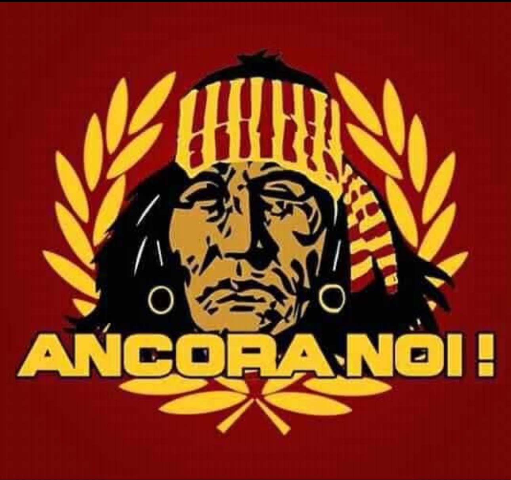
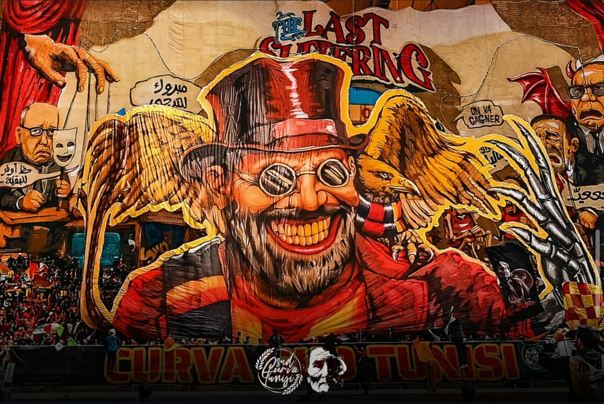
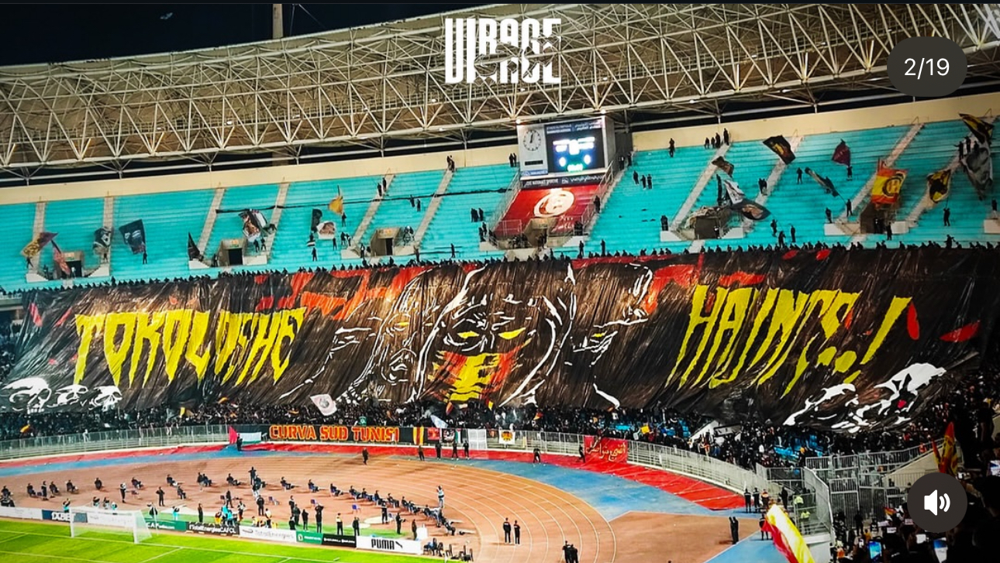

العودة للصفحة الرئيسيةروح المدرجات… صوت الحرية… ووفاء لا يموت
تأسست مجموعة "ألتراس لمكشخين" (UL) في عام 2002 لتكون بمثابة نقطة تحول في المشهد الجماهيري لنادي الترجي الرياضي التونسي (EST). جاءت هذه الخطوة لتبني مفهوم الألتراس الحديث، القائم على التنظيم الذاتي والاستقلالية التامة عن إدارة النادي، بهدف خلق دعم متواصل وفعال ومبدع. منذ نشأتها، اتخذت المجموعة من المنعرج الجنوبي (Virage Sud) بالملعب الأولمبي برادس معقلاً رئيسيًا لها، حيث تعمل على توحيد أصوات وشغف جماهير الترجي تحت شعار الولاء المطلق للكيان الرياضي.
اشتهرت مجموعة "ألتراس لمكشخين" بشكل واسع ببراعتها في فنون التيفو (Tifo)، حيث قدمت على مر السنين عروضًا بصرية ضخمة ومعقدة، تميزت بالدقة في التنفيذ وعمق الرسالة. لا تقتصر أعمالهم على اللوحات الفنية فحسب، بل تمتد لتشمل الإبداع في الأهازيج والأغاني الحماسية التي تتردد أصداؤها في المدرجات، بالإضافة إلى استخدام كثيف ومنظم للمعدات الجماهيرية مثل الشماريخ والأعلام والقصاصات الورقية. كما تُعرف المجموعة بتنظيمها المحترف لرحلات التنقل الكبرى لدعم الفريق خارج الديار، سواء محليًا أو قاريًا، مما يؤكد التزامها الدائم.
تُعرف "ألتراس لمكشخين" بأنها قوة جماهيرية لا يستهان بها على مستوى تونس وأفريقيا، حيث ساهمت في جعل "الفيراج سُود" واحدًا من أقوى المدرجات في القارة. اكتسبت المجموعة شهرتها من خلال تحدي الصعاب والمواقف، والتركيز على العقلية الألتراسية التي ترفض التساهل في الدفاع عن مبادئها. ويُعدّ تاريخها حافلًا بـالمنافسة الشريفة مع مجموعات الألتراس الأخرى، وخاصةً في الدربي التونسي، حيث تتبادل المجموعات رسائل التيفو والردود الفنية، مما يرفع مستوى الإبداع الجماهيري في البلاد.

